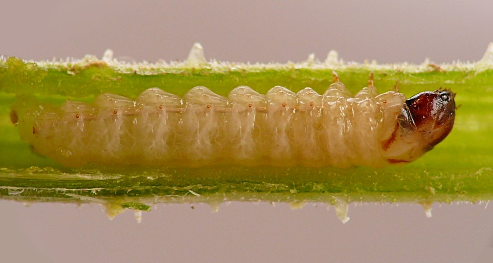
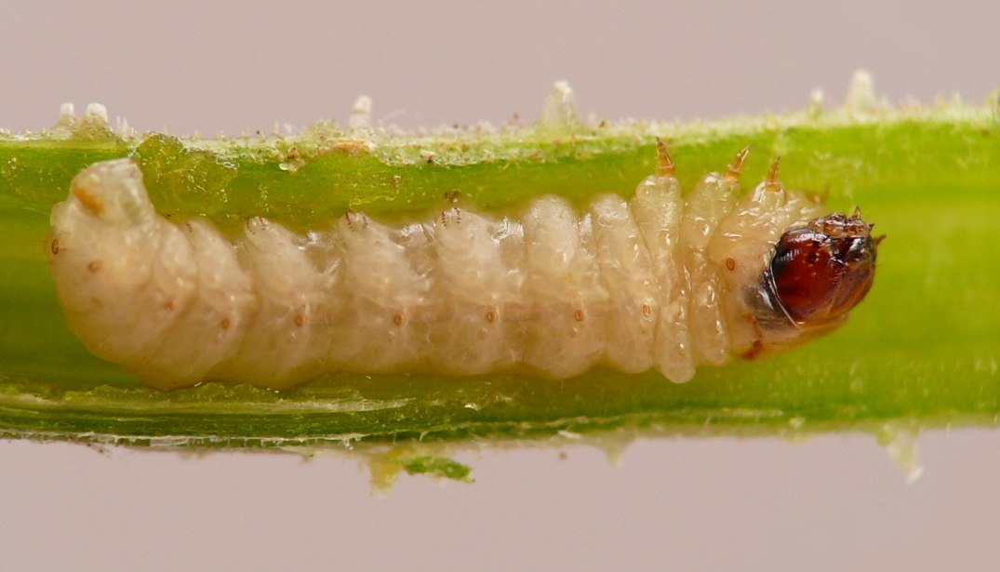
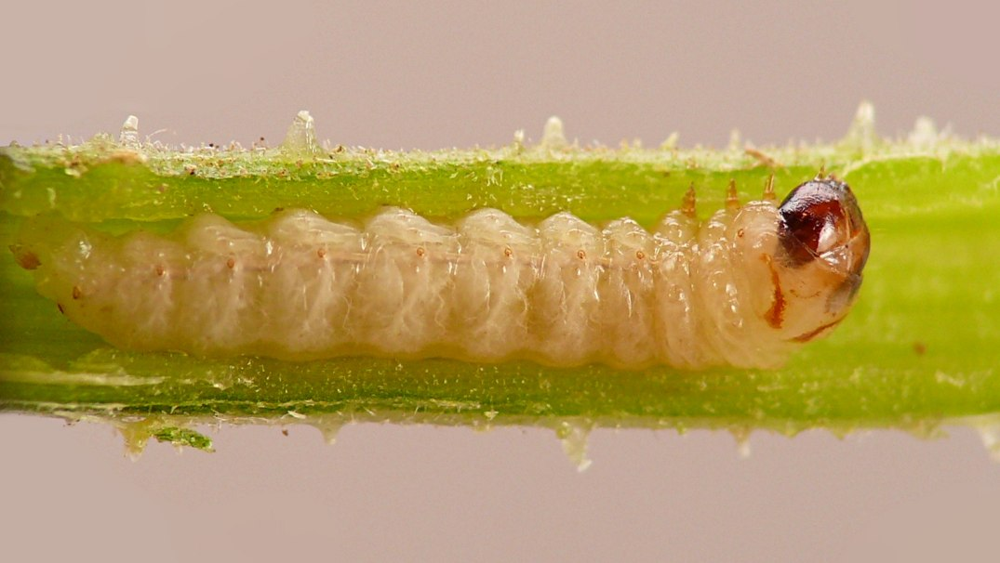
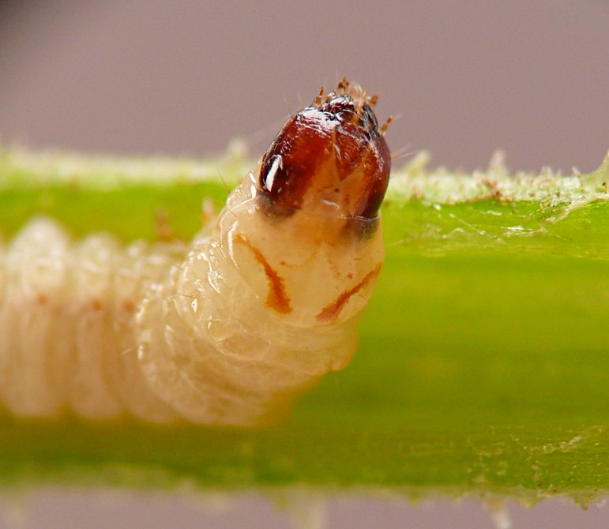
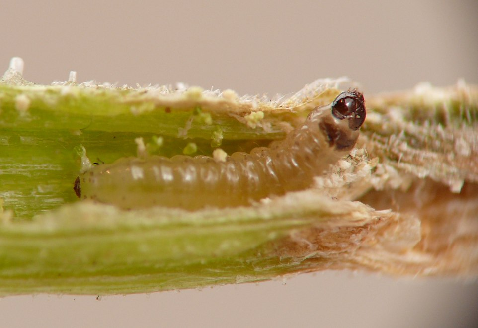
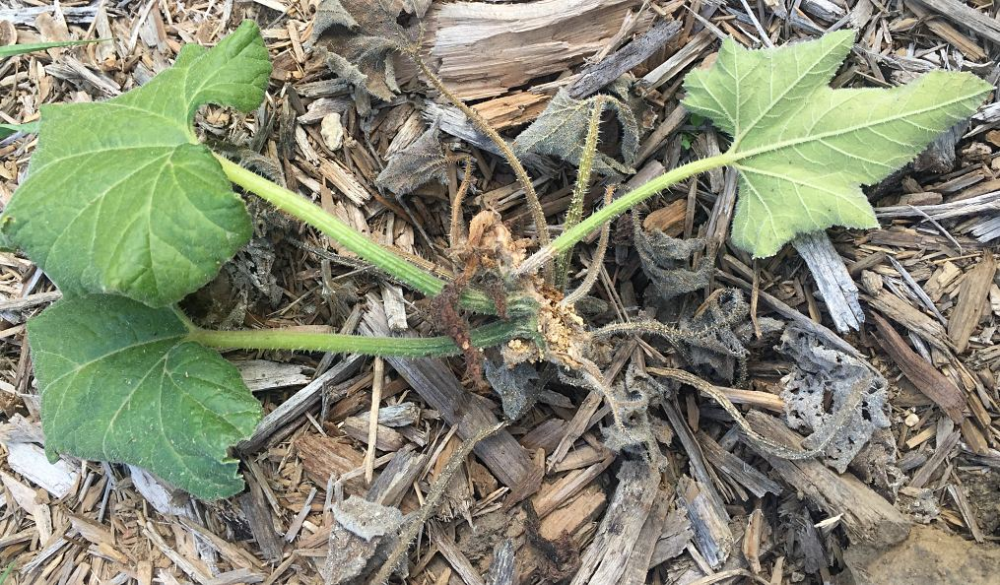
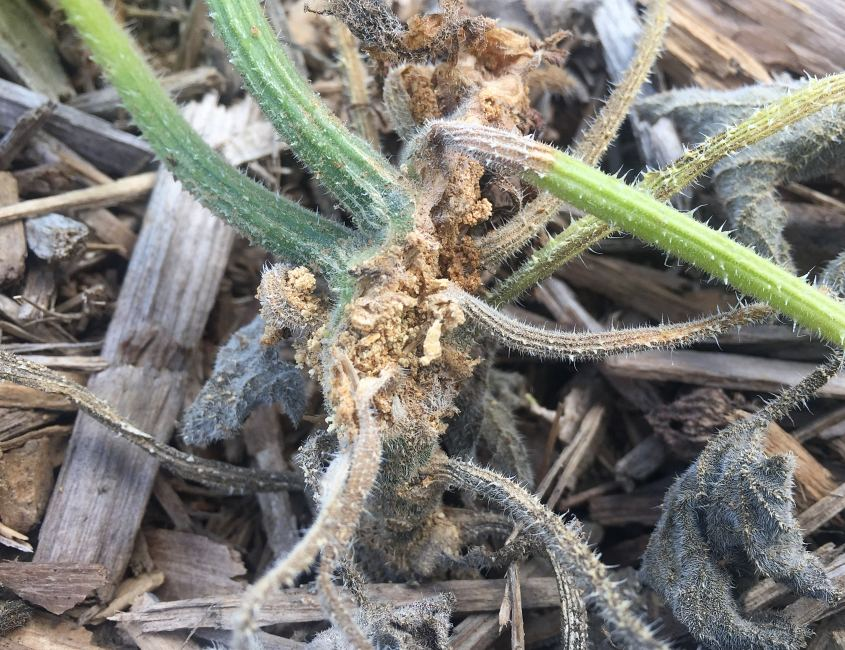

Stem borer (Lepidoptera: Sesiidae) in Cucurbita
| Record no.: | 0751 |
|---|---|
| Feeding guild: | Stem borer |
| Taxonomy: | Lepidoptera: Sesiidae: Eichlinia cucurbitae |
| Stages observed: | trace, larva |
| Distribution observed: | IA |
| Hosts in Cucurbita: | C. pepo (summer squash) |
The harm to squash plants wrought by E. cucurbitae is well known to gardeners and farmers throughout the study area, and I have crossed paths with this borer on several occasions. Larvae may occur in main stems or leaf petioles, which they tunnel extensively, ejecting large amounts of pale frass. Unlike many borers, the damage and accumulated piles of frass are usually externally visible. I observed larvae or their damage in summer squash and field pumpkin (C. pepo), but they may also occur in "cucumbers, gourds, and other cucurbits" (Benson and United States Department of Agriculture 1911).
Smaller, younger larvae found in cucurbit plants may have a very dark, almost black head capsule and prothoracic shield, along with black pigmentation on the terminal segment of the abdomen, while on older larvae the head is reddish or brownish and the prothoracic shield may be more or less unpigmented except for two distinctive diagonal brown lines. Based on the images and information in Chittenden (1908), Coin et al. (2026), and University of Georgia - Center for Invasive Species and Ecosystem Health (2026), these represent different instars of the same species. Below, for the sake of comparison, I have included images of both a younger and an older larva encountered in the survey.

 Prev
Prev
{kind=link}
{kind=link}

{kind=link}

{kind=link}

{kind=link}

{kind=link}

{kind=link}

- Benson, M.F. and United States Department of Agriculture Bureau of Entomology and Plant Quarantine. 1911. Squash borer. Picture Sheet No. 10. U.S. Government Printing Office: Washington, D.C. Retrieved September 14, 2026 from http://www.biodiversitylibrary.org/page/59411249.[return to in-text citation]
- Chittenden, F.H. 1908. The squash-vine borer. (Melittia satyriniformis Hbn.). United States Department of Agriculture, Bureau of Entomology, Circular No. 38, second revision. Retrieved September 14, 2026 from http://www.biodiversitylibrary.org/page/41396519.[return to in-text citation]
- Coin, P., Moisset, B., McLeod, R., Gould, A., Quinn, M., Heiman, M., Eiseman, C.S., O'Connor, M., Hardy, R., Childs, K., Austin, K., and J. VanDyk (ed.). 2026. Species Eichlinia cucurbitae - Squash Vine Borer - Hodges#2536. Species information page at BugGuide.net. Retrieved September 14, 2026 from https://www.bugguide.net/node/view/11810.[return to in-text citation]
- University of Georgia - Center for Invasive Species and Ecosystem Health (ed.). 2026. Squash vine borer (Melittia cucurbitae (Harris)). Subject page at InsectImages.org. Retrieved September 14, 2026 from https://www.insectimages.org/browse/subject/8922?tab=view-images.[return to in-text citation]
Page created: September 14, 2026. Last update: none